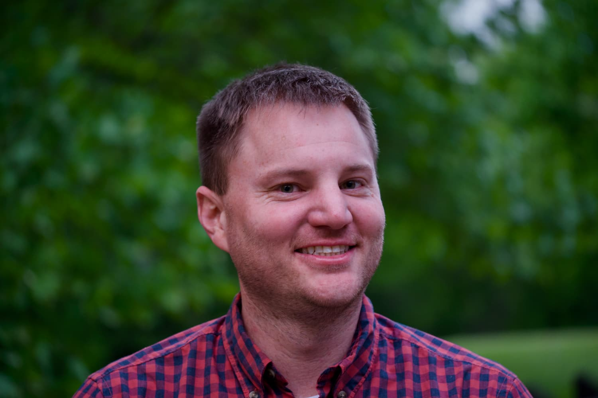

Hello, I’m Luke.
I’m a product leader based in San Diego, California who builds systems that turn complexity into measurable outcomes.
Over the past decade I’ve led platform, growth, and AI-driven product initiatives across climate, energy, and regulated markets from first product hire through acquisition and scale.
How I Build
In the age of AI, answers are abundant. The real advantage is asking better questions.
I design product systems that turn ambiguity into structure, speed into leverage, and complexity into measurable outcomes.
Product Philosophy
Products are not features. They are systems.
Strong product leadership starts with framing the right problem, grounding decisions in real-world constraints, and aligning teams around outcomes that matter.
I focus on the full loop from inputs to outcomes, from uncertainty to decision velocity, and from strategy to accountable execution. Clear framing creates momentum. Structured thinking creates leverage.
How I Think & Build
I rely on structured problem solving and disciplined execution:
- Frame First: Define the problem and success criteria before proposing solutions.
- Map the System: Identify stakeholders, constraints, dependencies, and economic logic.
- Prioritize for Leverage: Focus effort where it unlocks disproportionate value.
- Measure What Matters: Define leading and lagging indicators that guide direction.
- Deliver Responsibly: Build with guardrails that protect quality, compliance, and alignment.
Where I Apply This
I work in environments where complexity is real and stakes are high.
I have built within regulated utility systems, high-growth SaaS environments, and AI-enabled workflows where reliability and performance drive trust.
I have led teams through first product hires, acquisitions, and platform transitions while maintaining clarity, accountability, and measurable impact.
Personal Joys
I’m energized by learning and building. Outside of my current focus on agentic AI, you’ll usually find me in a few consistent arenas:
- Chess: 850+ day playing streak. Always up for a match — Chess.com @fiboyahtzee
- Bouldering: Regularly climbing (and falling) at Mesa Rim in San Diego.
- Cooking: Spicy Szechuan experiments and thoughtfully overbuilt cheese boards. Instagram @Luketriescooking
Let’s Talk Product Systems
If you’re looking for structured, outcome-oriented product leadership, let’s connect.
Get in touch Connect on LinkedIn